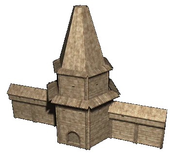

|
Древнерусский город |
|
| Древнерусский город в
XII веке был постояннным населенным пунктом, в
который с обширной сельской округи -- волости --
свозилась, перерабатывалась и
перераспределялась большая часть произведенных
там продуктов. Укрепленная валом и стеной
площадь абсолютного большинства древнерусских
городов превышала два гектара. Города возникали в результате слияния владений нескольких боярских родов вокруг единого центра, а их внутренняя планировка и застройка во многом зависела от характера местности, на которой они были расположены. Крупнейшие города Руси имели в это время наиболее развитую и сложную планировку -- так, например, основу уличной планировки Киева составляли сквозные магистрали, которые шли или вдоль берега Днепра, или перпендикулярно к нему. Они связывали воедино три главных общетвенных и экономических центра города -- резиденцию митрополита, вечевую площадь с княжеским дворцом и торг с гаванью. Похожая планировка встречалась и у других древнерусских городов. Постройки в городах были разнообразны -- их основу составляли жилые клети, наземные срубные дома и полуземляные жилища. Разнообразными были и хозяйственные постройки, представленные погребами и зерновыми ямами, кладовыми и колодцами, ригами (помещениями для сушки снопов) и порубами (помещениями для содержания провинившихся). Как правило, в городах было развито несколько видов ремесел. Интенсивно развивалась торговля и административное управление. В XII веке города отличались высокой степенью концентрации населения, орудий производства и капиталов. Чем больше и гуще была заселена территория вокруг города, тем большим было и население самого города. Социальные границы в городах проходили по частоколам и заборам боярских и княжеских родовых гнезд, которые часто чередовались с кварталами, заселенными рядовыми горожанами. К укрепленным частям города примыкали открытые сельца, называвшиеся посадами. В течение всего XII века стабильно продолжало рости число городов. Если в первой половине их было около 70, то к концу века их общее число удваивается. Для Древней Руси города служили основными политическими и административными, хозяйственными и экономическими, военными, а также культурными центрами. |
|
Текст и
иллюстрации (c) 1997 Snowball Interactive Entertainment, Inc. |